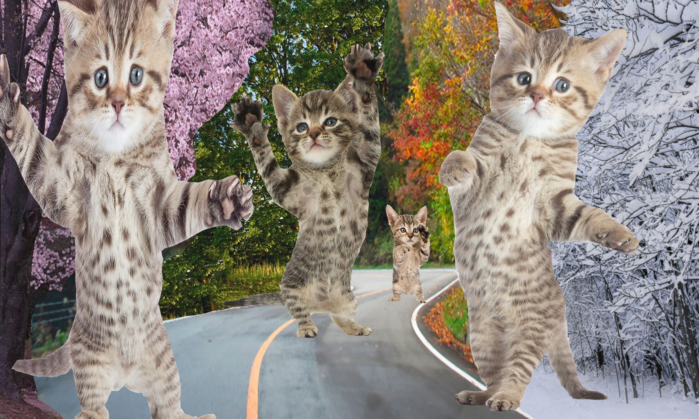
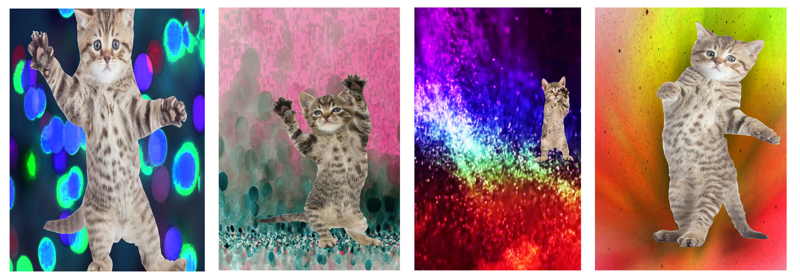

Assignment 2: Mocap Sequences
Fall 2018
The goal of this assignment was to create a motion capture sequence. Two images were to be created
at the end of the assignment: a horizontal motion capture, and a vertical motion capture.
The horizontal motion capture I created was of a cat in multiple poses. The background I chose to
create was one which travelled through the four seasons of the year. Each cat is in a different
season, thus the changed perspective, in an attempt to give depth, as the seasons change in the background.

The vertical motion capture I created used the same motion images. I did not have a story I wanted to
tell through this motion capture, my goal was to make it a more abstract image.
